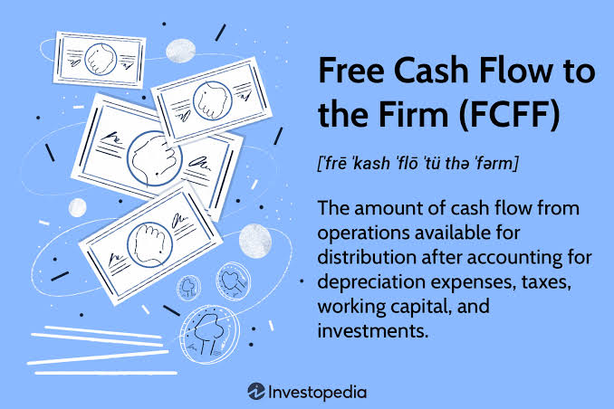

Free Cash Flow to Firm (FCFF)
Learn how to calculate the cash generated by a company's core operations that is available to all investors, forming the foundation of Discounted Cash Flow (DCF) valuation.

Free Cash Flow to Firm (FCFF) represents the cash generated by a company's core business operations that is available to be distributed to all capital providers, including both debt holders and equity holders.
Unlike Net Income, which is an accounting metric subject to non-cash adjustments and financing decisions, FCFF focuses purely on the actual cash the business produces after funding its necessary growth.
What is Free Cash Flow to Firm (FCFF)?
In corporate finance, accounting profits do not equal cash. A company can report high Net Income but still go bankrupt if it runs out of cash. FCFF strips out non-cash accounting items and accounts for the cash required to maintain and grow the business.
Where:
• EBIT × (1 - Tax Rate) = NOPAT (Net Operating Profit After Taxes)
• D&A = Non-cash expenses added back
• CapEx = Cash spent on long-term assets
• Change in NWC = Cash tied up in day-to-day operations
Breaking Down the Components
NOPAT: This represents the company's operating profit as if it had no debt. It removes the impact of interest expenses to show the true profitability of the core business.
Depreciation & Amortization (D&A): These are accounting expenses that reduce Net Income but do not involve an actual outflow of cash. Therefore, we add them back to find the true cash flow.
Capital Expenditures (CapEx): To keep the business running and growing, companies must buy equipment, buildings, and technology. This is a real cash outflow that must be subtracted.
Change in Net Working Capital (NWC): If a company's inventory or accounts receivable increases, it has tied up cash in its daily operations. An increase in NWC is a cash outflow, while a decrease is a cash inflow.
Real-World Corporate Finance Example
Suppose Company Y reports an EBIT of $10 million. The corporate tax rate is 25%. The company also reports $2 million in Depreciation, spent $3 million on CapEx, and had an increase in Net Working Capital of $1 million.
Step 1: Calculate NOPAT. $10M × (1 - 0.25) = $7.5 million.
Step 2: Add back D&A. $7.5M + $2M = $9.5 million.
Step 3: Subtract CapEx and Change in NWC. $9.5M - $3M - $1M = $5.5
million.
Why FCFF is the Engine of DCF Valuation
Enterprise Value Focus: FCFF is used to calculate the value of the entire business (Enterprise Value), regardless of how it is financed. This makes it the perfect metric for comparing companies with different debt levels.
Capital Structure Independence: Because FCFF is calculated before interest payments, it isolates the operating performance of the business from its financing decisions.
Forecasting the Future: In a DCF model, analysts forecast FCFF for the next 5 to 10 years. The present value of these future FCFFs dictates what the company is worth today.
📝 Practice Quiz & Submodule Check
Complete all questions to unlock Submodule 3.2Answer the multiple-choice questions below. Scoring a perfect score will automatically mark this submodule as completed!